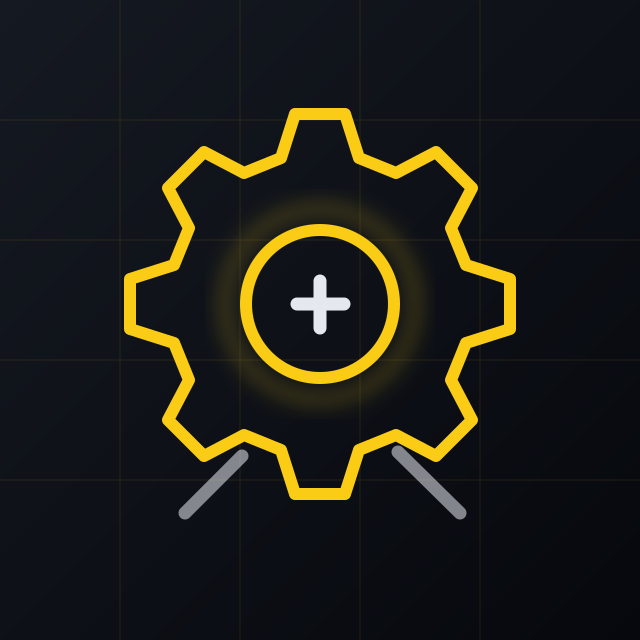
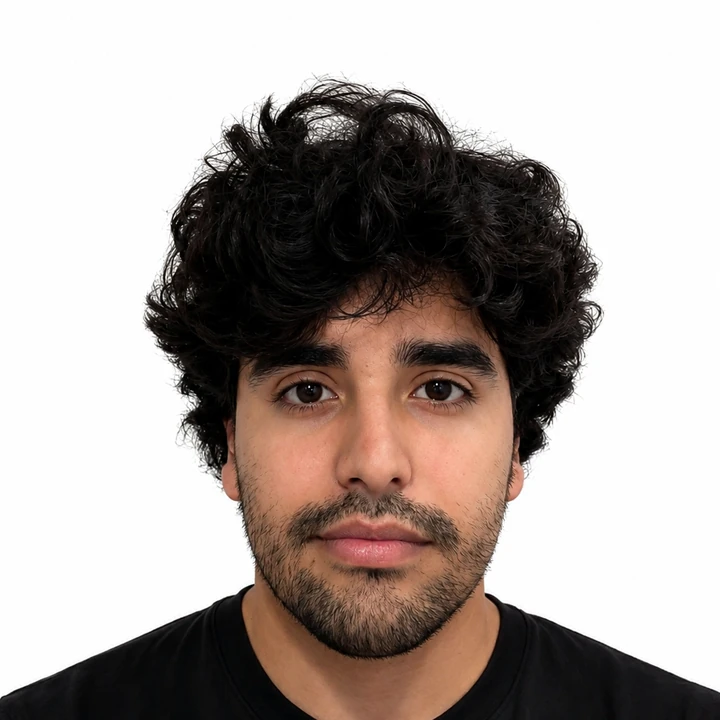

2026
INSTITUT PASCAL · FRANCE
Estágio em robótica e controle de sistemas robotizados
Institut Pascal · Clermont-Ferrand · 2026
Controle cartesiano do Franka FR3, restrições RCM, servo-visão IBVS e validação experimental em robô físico.
Ver projeto ↗Selecione um projeto ou veja as ferramentas e softwares que utilizo.
 P–01Servo-visão · RCMFranka FR3
P–01Servo-visão · RCMFranka FR3 P–02Visão · UR3eReconstrução 3D
P–02Visão · UR3eReconstrução 3D P–03CAD · MEFBaja UFAM
P–03CAD · MEFBaja UFAM P–04Materiais · PesquisaPLA + Jarina
P–04Materiais · PesquisaPLA + Jarina P–05Aprendizagem · NavegaçãoTurtleBot3
P–05Aprendizagem · NavegaçãoTurtleBot3
↗CAD · Robótica · ProgramaçãoFerramentas e softwares
P–01 · Franka FR3Servo-visão · RCMP–02 · Reconstrução 3DVisão · UR3eP–03 · Baja UFAMCAD · MEFP–04 · PLA + JarinaMateriais · PesquisaP–05 · TurtleBot3Aprendizagem · NavegaçãoFerramentas e softwaresCAD · Robótica · ProgramaçãoOLÁ, EU SOU
Robótica · Projeto mecânico · Simulação
Em dupla diplomação na SIGMA Clermont e na UFAM, combino projeto mecânico, simulação numérica e robótica experimental. Minha trajetória reúne desenvolvimento de sistemas de freio e materiais compósitos, além de controle robótico e servo-visão em plataforma física.
Cinco projetos selecionados de engenharia mecânica, robótica e experimentação. Clique em um hexágono para explorar os detalhes técnicos.
01 / 05Desenvolvimento e avaliação experimental de uma plataforma de manipulação de sonda laparoscópica com restrição RCM e orientação visual RGB-D.
02 / 05Pipeline de percepção por nuvens de pontos e reconstrução 3D desenvolvido em projeto com o robô UR3e.
03 / 05Preparo do pó de jarina, formulações PLA/copaíba (0–5%), molde ASTM D638 usinado e análise crítica dos ensaios de tração.
 04 / 05
04 / 05Participação no desenvolvimento de veículo off-road, com modelagem CAD e análise estrutural.
05 / 05Duas frentes complementares do nosso trabalho com TurtleBot3: uma arquitetura ROS 2 para missões autônomas de entrega com Nav2 e um ambiente de simulação para comparar três métodos de aprendizagem por reforço em navegação e desvio de obstáculos. O relatório detalhado abaixo avalia os algoritmos de RL; ele não demonstra que a missão de entrega foi otimizada por esses algoritmos.
Institut Pascal · Clermont-Ferrand · 2026
Controle cartesiano do Franka FR3, restrições RCM, servo-visão IBVS e validação experimental em robô físico.
Ver projeto ↗Universidade Federal do Amazonas (UFAM) · Maio–agosto de 2024 · 156 horas
Apoio a estudantes de Engenharia Mecânica em desenho técnico, exercícios de CAD e atividades práticas no SolidWorks.
Ciclo de engenharia mecânica · Dupla diplomação com a UFAM
França · Em andamentoEngenharia mecânica · Instituição de origem da dupla diplomação
Brasil · Em andamentoMaster 2 em Mecânica · Materiais, Estruturas, Confiabilidade e Máquinas (MSFM)
França · Em andamentoParticipação em eventos de engenharia mecânica e palestra técnica. Os certificados comprovam presença, não publicação científica.
Manaus · 20–22 de agosto de 2024 · 30 h
Participação no congresso internacional de engenharia mecânica e industrial.
Ver certificado ↗Manaus · 11–13 de dezembro de 2024 · 30 h
Participação na semana acadêmica de engenharia mecânica.
Ver certificado ↗XI SEMEC · 12 de dezembro de 2024 · 6 h
Palestra técnica realizada durante a XI SEMEC.
Ver certificado ↗Trabalhos científicos em equipe e apresentações acadêmicas. O status editorial do manuscrito abaixo ainda precisa ser confirmado.
Pesquisa em equipe sobre o método LAnD: guiamento visual de uma sonda de ultrassom laparoscópica até o primeiro contato, respeitando a restrição RCM e a detecção de força. Ensaios com fantoma de fígado de silicone e Franka FR3.
Apresentação dos resultados da pesquisa PIBIC/PAIC da UFAM sobre PLA reforçado com pó de jarina.
Projetos de peças e conjuntos · sistemas de freio · análise estrutural · prototipagem · desenho técnico
Método dos elementos finitos (MEF) · cálculos mecânicos · MATLAB · testes e validação experimental
Cinemática e controle de robôs · ROS 2 · controle cartesiano · RCM · servo-visão IBVS · navegação autônoma
Visão RGB-D · reconstrução 3D · nuvens de pontos · processamento de imagens · ensaios mecânicos · compósitos poliméricos